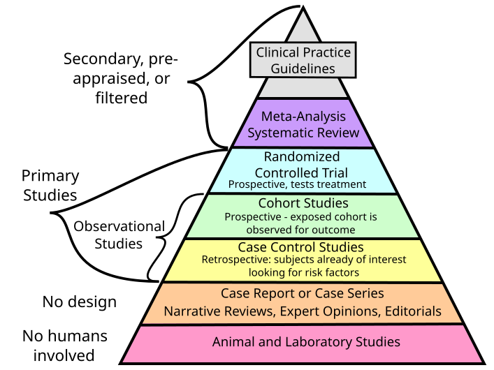

Доказова медицина — це підхід до медичної практики, який поєднує найкращі доступні клінічні та наукові дані з досвідом окремих клініцистів і цінностями
уподобаннями та унікальними обставинами пацієнтів. Це систематичний, достовірний з точки зору медичної статистики, і орієнтований на пацієнта підхід до профілактики
діагностики, лікування та відновлення.
Доказова медицина це також підхід до охорони здоров’я та медичного навчання й освіти, який наголошує на використанні найкращих наявних наукових даних
для прийняття клінічних рішень і наданні найефективнішої допомоги пацієнтам на науковій основі.
Основною метою доказової медицини є покращення результатів лікування пацієнтів шляхом сприяння прийняттю обґрунтованих рішень, оптимізації вибору лікування та мінімізації використання потенційно шкідливих або неефективних втручань.
Доказова медицина об’єднує клінічний досвід, цінності й переваги пацієнтів, а також найкращі доступні докази систематичних досліджень з метою покращення результатів профілактики, діагностики, лікування та відновлення пацієнтів.
Коріння доказової медицини медицини можна простежити до роботи Арчі Кокрейна, який у 1970-х роках виступав за використання систематичних оглядів клінічних випробувань як засобу покращення охорони здоров’я.Проте лише в 1990-х роках доказова медицина виокремилась в окремий підхід до охорони здоров’я. У 1992 році Робоча група з доказової медицини під керівництвом Гордона Гаятта ввела термін «доказова медицина» та визначила його як «сумлінне, чітке та розумне використання найкращих поточних доказів у прийнятті рішень щодо догляду за окремими пацієнтами». З моменту появи в 1990-х роках доказова медицина продовжує розвиватися. Однією з важливих подій стало зростання Кокранівської співпраці, міжнародної мережі дослідників, які проводять і поширюють систематичні огляди втручань у сфері охорони здоров’я. Іншою подією стало все більш широке використання клінічних практичних рекомендацій, заснованих на доказах, які надають клініцистам рекомендації на основі найкращих найкращих наявних доказів
Практика доказової медицини базується на кількох ключових принципах, якими керуються лікарі під час прийняття рішень. Формулювання клінічних питань: щоб практикувати доказову медицину, клініцисти повинні спочатку сформулювати чіткі та цілеспрямовані питання щодо клінічної проблеми, яку вони намагаються вирішити. Ці питання мають бути сформульовані таким чином, щоб уможливити систематичний пошук відповідних доказів. Пошук доказів: після того, як клінічні питання були сформульовані, клініцисти повинні знайти найкращі наявні докази, щоб відповісти на ці запитання. Це передбачає використання стратегій систематичного пошуку для виявлення відповідних досліджень та інших джерел доказів.
Пошук доказів: після того, як клінічні питання були сформульовані, клініцисти повинні знайти найкращі наявні докази, щоб відповісти на ці запитання. Це передбачає використання стратегій систематичного пошуку для виявлення відповідних досліджень та інших джерел доказів.
Критична оцінка доказів: після визначення доказів клініцисти повинні критично оцінити їх, щоб визначити їх якість і релевантність. Це передбачає оцінку плану дослідження, розміру вибірки, статистичних методів та інших факторів, які можуть вплинути на достовірність доказів. нтеграція доказів у клінічну практику: нарешті, клініцисти повинні інтегрувати найкращі наявні докази у свої клінічні рішення, беручи до уваги цінності та переваги пацієнта, а також свій власний клінічний досвід. Дотримуючись цих ключових принципів, клініцисти можуть практикувати доказову медицину систематично та ретельно, використовуючи найкращі наявні докази для прийняття рішень та покращення результатів для пацієнтів
Ієрархія доказів є широко визнаною основою для оцінки якості доказів у сфері охорони здоров’я. Хоч і досі йдуть дискусії про структуру ієрархії, зазвичай, вона представлена у вигляді піраміди з найвищою якістю доказів у верхній частині та найнижчої якості у нижній частині.
